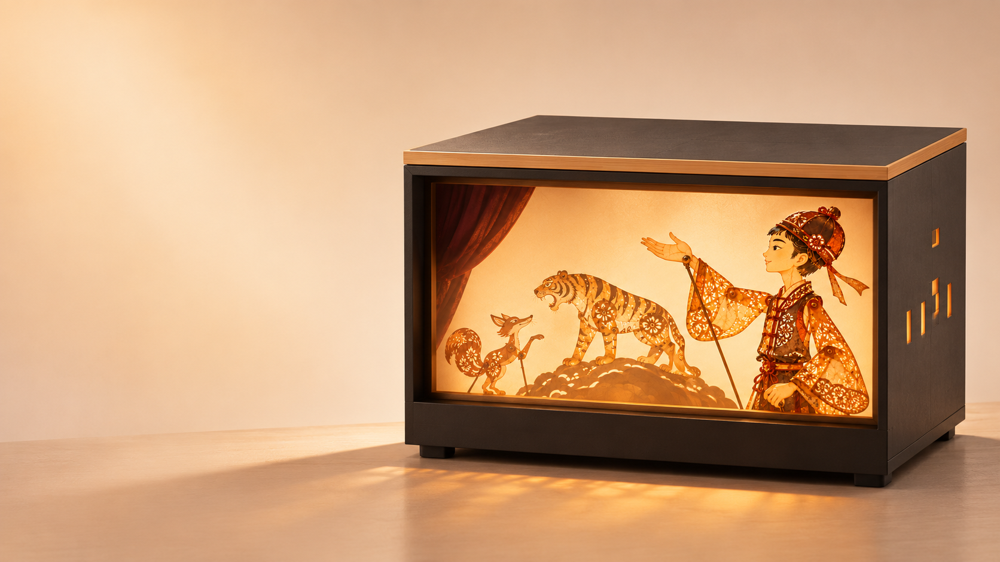

已经推进
首出故事的声画素材
播放与分支程序
上板与语音链路测试

AI 非遗互动光影戏台
让一次看戏，
成为主动了解非遗的起点。
学校与图书馆的日常文化体验 · 产品概念图
个人缘起
小时候喜欢的表演。
后来喜欢听的声音。
慢慢产生的好奇。
让孩子在日常生活中，也有一次这样的相遇。
希望验证的第一步
皮影艺术背景：国家图书馆《中国皮影戏》。孩子的反应为体验设想，尚非观察结果。
03 / 11产品体验设计
边框、幕光、角色出场，
保留看一场表演的氛围。
故事、动作、音乐与锣鼓，让戏值得看。
欢迎、串场，邀请观众在合适的时候开口。
理解孩子的主意，连接回应与后续演出。
首个故事 / 《狐假虎威》互动改编
怎么验证
狐狸的话？
看看大家还怕不怕狐狸。
看看没有狐狸会怎样。
老虎识破借威，
故事自然收束。
“我刚才说的话，被听见了，也在戏里产生了变化。”
交互设计示意；上句为期待的体验感受，非已取得的用户评价。
05 / 11作品展示 / 用户确认的正式宣传片
技术分工
小班主串起演出与交流。当前先完成一出戏、一次关键互动；后续逐出制作与审校。
长期产品目标
孩子自己走过来，
自己选戏、自己体验。
《狐假虎威》
已制作演出素材。
新的剧目逐出制作、审校。
后续内容尚待扩充。
支持复访的主要方向：持续有新戏可看。
参考：国家图书馆少年儿童数字阅读活动（2022）。说明既有服务场景，不代表采购意向。
08 / 11交付设想 / 采用价值待试用验证
观看与参与的体验者。
学校 / 图书馆需要沟通的采用方。
拟提供一个可持续开放的文化体验点。
先核对工作人员操作、声音与空间、内容更新投入；再按真实成本确定采购或长期租用方式。
当前没有确认价格、采购或订单。
当前进展 / 2026.11.07
首出故事的声画素材
播放与分支程序
上板与语音链路测试
整机组装与连续互动
孩子被什么吸引、是否想再来
工作人员能否持续使用
整机仍在组装，现场连续互动待验证；长期自主运行尚未验收。
10 / 11影有回声
从一次喜欢开始，
让兴趣有机会延续。
希望有人因此，愿意多了解一点皮影。